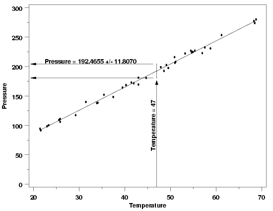

4.1. Introduction to Process Modeling
4.1.3. What are process models used for?
4.1.3.2. |
Prediction |


|
4.
Process Modeling
4.1. Introduction to Process Modeling 4.1.3. What are process models used for?
|
|||
| More on Prediction | As mentioned earlier, the goal of prediction is to determine future value(s) of the response variable that are associated with a specific combination of predictor variable values. As in estimation, the predicted values are computed by plugging the value(s) of the predictor variable(s) into the regression equation, after estimating the unknown parameters from the data. The difference between estimation and prediction arises only in the computation of the uncertainties. These differences are illustrated below using the Pressure/Temperature example in parallel with the example illustrating estimation. | ||
| Example | Suppose in this case the predictor variable value of interest is a temperature of 47 degrees. Computing the predicted value using the equation $$ \hat{P} = 7.749695 + 3.930123T $$ yields a predicted pressure of 192.4655. | ||
|
|
|||
| Of course, if the pressure/temperature experiment were repeated, the estimates of the parameters of the regression function obtained from the data would differ slightly each time because of the randomness in the data and the need to sample a limited amount of data. Different parameter estimates would, in turn, yield different predicted values. The plot below illustrates the type of slight variation that could occur in a repeated experiment. | |||
| Predicted Value from a Repeated Experiment |
|
||
| Prediction Uncertainty | A critical part of prediction is an assessment of how much a predicted value will fluctuate due to the noise in the data. Without that information there is no basis for comparing a predicted value to a target value or to another prediction. As a result, any method used for prediction should include an assessment of the uncertainty in the predicted value(s). Fortunately it is often the case that the data used to fit the model to a process can also be used to compute the uncertainty of predictions from the model. In the pressure/temperature example a prediction interval for the value of the regresion function at 47 degrees can be computed from the data used to fit the model. The plot below shows a 99 % prediction interval produced using the original data. This interval gives the range of plausible values for a single future pressure measurement observed at a temperature of 47 degrees based on the parameter estimates and the noise in the data. | ||
| 99 % Prediction Interval for Pressure at T=47 |  | ||
| Length of Prediction Intervals | Because the prediction interval is an interval for the value of a single new measurement from the process, the uncertainty includes the noise that is inherent in the estimates of the regression parameters and the uncertainty of the new measurement. This means that the interval for a new measurement will be wider than the confidence interval for the value of the regression function. These intervals are called prediction intervals rather than confidence intervals because the latter are for parameters, and a new measurement is a random variable, not a parameter. | ||
| Tolerance Intervals | Like a prediction interval, a tolerance interval brackets the plausible values of new measurements from the process being modeled. However, instead of bracketing the value of a single measurement or a fixed number of measurements, a tolerance interval brackets a specified percentage of all future measurements for a given set of predictor variable values. For example, to monitor future pressure measurements at 47 degrees for extreme values, either low or high, a tolerance interval that brackets 98 % of all future measurements with high confidence could be used. If a future value then fell outside of the interval, the system would then be checked to ensure that everything was working correctly. A 99 % tolerance interval that captures 98 % of all future pressure measurements at a temperature of 47 degrees is 192.4655 \(\pm\) 14.5810. This interval is wider than the prediction interval for a single measurement because it is designed to capture a larger proportion of all future measurements. The explanation of tolerance intervals is potentially confusing because there are two percentages used in the description of the interval. One, in this case 99 %, describes how confident we are that the interval will capture the quantity that we want it to capture. The other, 98 %, describes what the target quantity is, which in this case that is 98% of all future measurements at T=47 degrees. | ||
| More Info | For more information on the interpretation and computation of prediction and tolerance intervals, see Section 5.1. | ||

{kind=link}